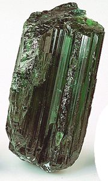
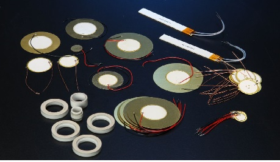

A Pioeletricidade
É a capacidade de alguns cristais gerarem tensão elétrica por resposta a uma pressão mecânica.
O termo piezoeletricidade provém do grego (piezein), que significa, apertar/pressionar.
Referente a geração de corrente elétrica, juntou-se a designação eletricidade, de modo que piezoeletricidade é
interpretado como a produção de energia elétrica devido a compressão sobre determinados materiais.

História
Descoberto pelos irmãos Pierre e Jacques Curie na França, em 1880, o efeito
piezoelétrico é apresentado em cristais. Os irmãos Curie, no entanto, não previram o efeito
piezoelétrico inverso. O efeito inverso foi matematicamente deduzido de princípios fundamentais
da termodinâmica por Gabriel Lippmann em 1881. Os Curie imediatamente confirmaram a existência
do efeito inverso, o que evidenciou de forma quantitativa a reversibilidade completa de
eletro-mecânico para as deformações em cristais piezoelétricos.
Nas décadas seguintes, a piezoeletricidade permaneceu como sendo uma curiosidade de laboratório.
Mais trabalho foi feito para explorar e definir as estruturas cristalinas que tinham a propriedade
de gerar corrente elétrica. Isso culminou no ano de 1910, com a publicação do livro de Woldemar
Voigt Lehrbuch der Kristallphysik (Textbook no Crystal Física), que descreve 20 classes de
cristais naturais capazes de gerar corrente quando submetidos a pressão mecânica, e rigorosamente
definidas as constantes piezoelétricas usando análise tensorial.
Cristais
Para conseguir o efeito piezoelétrico, eles devem ser feitas com uma estrutura cúbica denominada
Perovskita, que possui uma configuração genérica ABO3, onde A corresponde a cátions divalentes,
B a cátions divalentes, trivalentes, tetravalentes ou pentavalentes e O é o oxigênio.
Podemos citar como exemplos destes materiais o Titanato de Bário (BaTiO3) e o Titanato Zirconato de
Chumbo (Pb(Zr,Ti)O3- PZT).
Apesar de encontrarmos estes elementos na natureza, é possível também, produzir materiais que terão
o mesmo comportamento: as cerâmicas piezoelétricas. Uma das vantagens na fabricação destas cerâmicas
é a variedade de formas e tamanhos possíveis.


Funcionamento
Piezoelectricidade é uma combinação de efeitos do comportamento elétrico do material:
D = eE + eS\;
onde D é a densidade de deslocamento de carga elétrica, e ε a permissividade elétrica, E
representa o campo elétrico, 'e' representa a constante de stress e S é a tensão longitudinal
aplicada.
Quando a aplicação de uma força F, o centro de equilíbrio das cargas positivas e negativas são
deslocados, causando a polarização do material, e o consequente deslocamento de corrente.
Aplicação
- Medidores de pressão;
- Alarmes;
- Ultrassom;
- Carregadores;
- Sensores
- Relógios